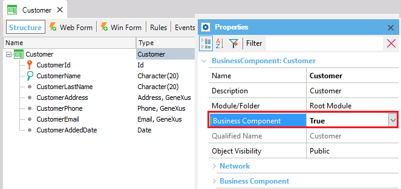
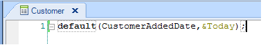

Business Component property
Sets that the Transaction can be executed in a 'silent' mode (without showing its form) in order to update the database from any object. Values
Description
The great advantage that the use of a Business Component provides is that you can update the database from any GeneXus object, and the same controls that are performed when the Transaction is executed will be done. The default value for this property is False. For example, suppose you define the Customer transaction as Business Component (by setting its Business Component property = True) :  Once you set this property to True, a Business Component data type named Customer is automatically created in the Knowledge Base. Then, you will be able to define in any object a variable based on the new data type, as the following image shows (in the example in a Web Panel):
The variables based on a Business Component data type (as &customer in this example), have got a set of properties that correspond to the Transaction attributes (so that you can assign them values). Also, a set of methods is available to apply to business components variables (in order to execute operations in the database as insertions, updates, etc.). Important: After assigning values to the properties of a Business Component variable and executing methods to update the database, it is necessary to write explicitly the Commit command in the code, wherever you consider that all the operations made to the database make a complete Logical Unit of Work (LUW). Run-time/Design-timeThis property applies only at design-time. Samples
Suppose the Customer Transaction shown above contains defined the following rule:  and assume the CustomerId attribute has got its Autonumber property set to True. The following code (included in the events section of the Web Panel where the &customer variable is defined) is inserting a customer by assigning values to the &customer variable properties (it means, the customer attributes), then the Save method is applied to the variable, and finally, the commit command is executed: Event 'Insert customer' &Customer=new() //in this case, the new operator can be omitted, but if more than one customer is inserted, it must be used &Customer.CustomerName = 'John' &Customer.CustomerLastName = 'Smith' &Customer.CustomerAddress = '165 Ocean Drive' &Customer.CustomerEmail = 'jsmith@hotmail.com' &Customer.Save() commit EndEvent Several explanations related to the previous code: When the save method is executed: Scope Objects: Transaction |